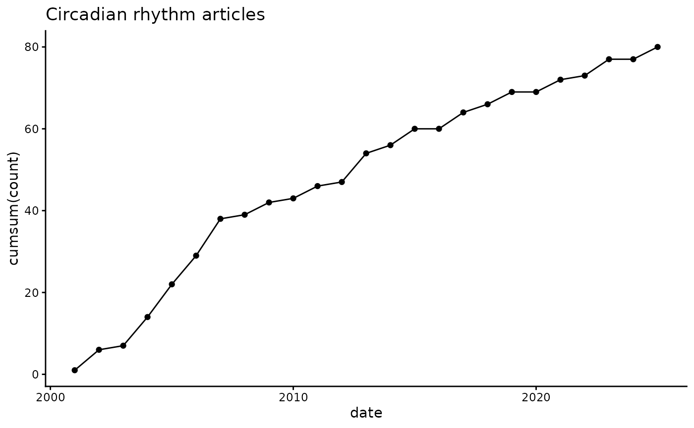
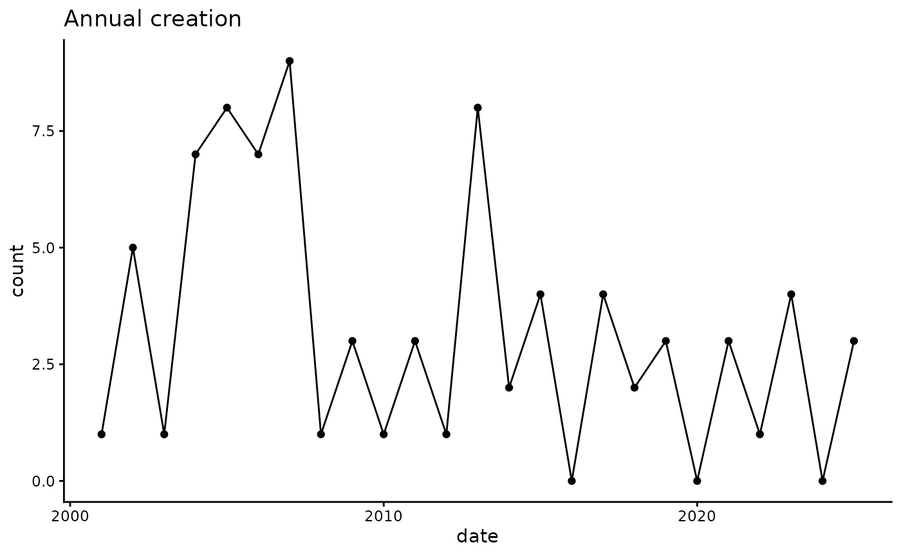
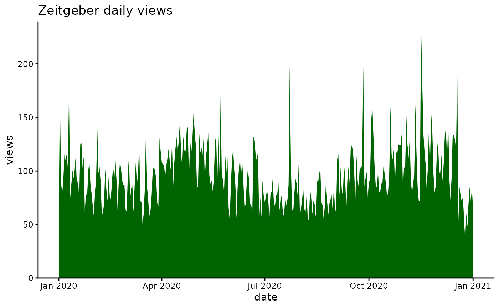
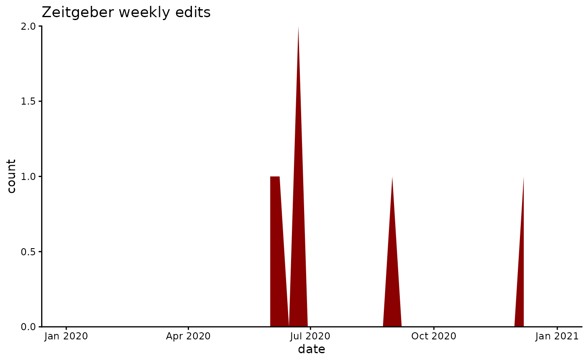

Overview
wikilite is an R toolkit for mining Wikipedia article revision history and citations. It connects to the public MediaWiki API to retrieve structured data frames that are ready for downstream analysis, annotation, and visualisation.
Key capabilities:
| Area | Key functions |
|---|---|
| History retrieval |
get_article_full_history_table(),
get_article_most_recent_table()
|
| Category navigation |
get_pagename_in_cat(),
get_subcat_with_depth()
|
| Citation counting |
get_doi_count(), get_refCount(),
get_ISBN_count()
|
| Citation parsing |
parse_article_ALL_citations(),
get_parsed_citations()
|
| Quality metrics | get_sci_score() |
| Annotation |
annotate_doi_list_europmc(),
annotate_doi_list_cross_ref()
|
| Revert trends | get_revert_counts() |
| Visualisation |
plot_article_creation_per_year(),
page_edit_plot()
|
Installation
# CRAN (once available)
install.packages("wikilite")
# Development version from GitHub
remotes::install_github("jsobel1/wikilite")Quick-start: a single article
library(wikilite)
# Most recent revision of the Zeitgeber article
recent <- get_article_most_recent_table("Zeitgeber")
# The data frame has columns: art, revid, user, timestamp, size, comment, *
# The "*" column contains the full raw wikitext.
names(recent)
#> [1] "art" "revid" "parentid" "user" "userid" "timestamp"
#> [7] "size" "comment" "*"Count citations directly from the wikitext:
text <- recent$`*`
get_doi_count(text) # number of DOIs
#> [1] 13
get_refCount(text) # number of <ref>...</ref> blocks
#> [1] 16
get_ISBN_count(text) # number of ISBNs
#> [1] 0
get_hyperlinkCount(text) # number of [[...]] links
#> [1] 33
get_sci_score(text) # fraction of citations that are journal citations
#> [1] 1Multiple articles via a category
# List all articles in a Wikipedia category
sleep_articles <- get_pagename_in_cat("Circadian rhythm")
head(sleep_articles)
#> [1] "Chronodisruption" "Circadian rhythm"
#> [3] "N-Acetylserotonin" "Actigraphy"
#> [5] "Actogram" "Aralkylamine N-acetyltransferase"
# Fetch the most recent revision for each article
sleep_recent <- get_category_articles_most_recent(sleep_articles)Extract DOIs
doi_regexp <- pkg.env$doi_regexp # "10\\.\\d{4,9}/[-._;()/:a-z0-9A-Z]+"
dois <- get_regex_citations_in_wiki_table(sleep_recent, doi_regexp)
head(dois)
#> art revid citation_fetched
#> 1 Chronodisruption 1352738775 10.1111/j.1600-079X.2009.00665.x
#> 2 Chronodisruption 1352738775 10.1530/REP-20-0298
#> 3 Chronodisruption 1352738775 10.1016/j.exger.2022.112076
#> 4 Chronodisruption 1352738775 10.1080/07420528.2019.1683570
#> 5 Chronodisruption 1352738775 10.1038/s41398-020-0694-0
#> 6 Chronodisruption 1352738775 10.1161/CIRCRESAHA.123.323520Visualise article creation over time
initial <- get_category_articles_creation(sleep_articles)
# Cumulative count (default)
plot_article_creation_per_year(initial, name_title = "Circadian rhythm articles")
# Annual counts
plot_article_creation_per_year(initial, name_title = "Annual creation",
Cumsum = FALSE)
Page-view and edit-activity plots
# Daily page views
page_view_plot("Zeitgeber", start = "2020010100", end = "2021010100")
# Weekly edits
page_edit_plot("Zeitgeber", start = "2020010100", end = "2021010100")
Export to Excel and BibTeX
# Revision table → Excel
write_wiki_history_to_xlsx(recent, "zeitgeber")
# All regex matches → one xlsx file per pattern
export_extracted_citations_xlsx(sleep_recent, "sleep_articles")
# DOIs → BibTeX
export_doi_to_bib(unique(dois$citation_fetched)[1:10], "references.bib")
#> | | | 0% | |======= | 10% | |============== | 20% | |===================== | 30% | |============================ | 40% | |=================================== | 50% | |========================================== | 60% | |================================================= | 70%
#> | |======================================================== | 80%
#> | |=============================================================== | 90%
#> | |======================================================================| 100%